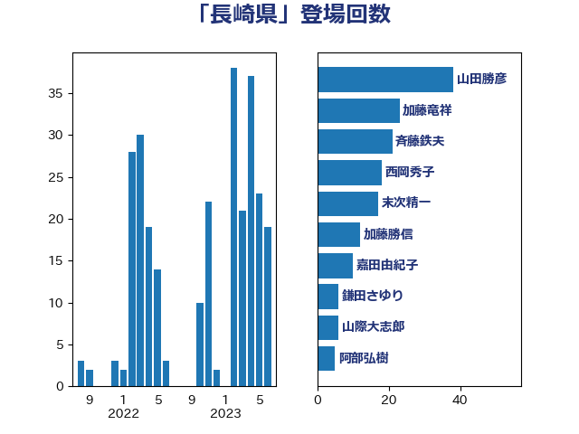

単語「長崎県」

| 山田勝彦 | 立憲民主党 | 38 回 |
| 加藤竜祥 | 自由民主党 | 23 回 |
| 斉藤鉄夫 | 公明党 | 21 回 |
| 西岡秀子 | 国民民主党 | 18 回 |
| 末次精一 | 立憲民主党 | 17 回 |
| 加藤勝信 | 自由民主党 | 12 回 |
| 嘉田由紀子 | 無所属 | 10 回 |
| 鎌田さゆり | 立憲民主党 | 6 回 |
| 山際大志郎 | 自由民主党 | 6 回 |
| 阿部弘樹 | 日本維新の会 | 5 回 |
| 西村康稔 | 自由民主党 | 5 回 |
| 金子恭之 | 自由民主党 | 4 回 |
| 西野太亮 | 自由民主党 | 4 回 |
| 後藤茂之 | 自由民主党 | 4 回 |
| 上川陽子 | 自由民主党 | 4 回 |
| 萩生田光一 | 自由民主党 | 3 回 |
| 岸田文雄 | 自由民主党 | 3 回 |
| 山本啓介 | 自由民主党 | 3 回 |
| 務台俊介 | 自由民主党 | 3 回 |
| 仁比聡平 | 日本共産党 | 3 回 |
| 三上えり | 立憲民主党 | 3 回 |
| 野間健 | 立憲民主党 | 2 回 |
| 野村哲郎 | 自由民主党 | 2 回 |
| 末松信介 | 自由民主党 | 2 回 |
| 高見康裕 | 自由民主党 | 1 回 |
| 須藤元気 | 無所属 | 1 回 |
| 青木愛 | 立憲民主党 | 1 回 |
| 足立敏之 | 自由民主党 | 1 回 |
| 赤池誠章 | 自由民主党 | 1 回 |
| 西銘恒三郎 | 自由民主党 | 1 回 |
| 菊田真紀子 | 立憲民主党 | 1 回 |
| 自見はなこ | 自由民主党 | 1 回 |
| 篠原孝 | 立憲民主党 | 1 回 |
| 窪田哲也 | 公明党 | 1 回 |
| 穀田恵二 | 日本共産党 | 1 回 |
| 神谷宗幣 | 参政党 | 1 回 |
| 田村貴昭 | 日本共産党 | 1 回 |
| 田村智子 | 日本共産党 | 1 回 |
| 池畑浩太朗 | 日本維新の会 | 1 回 |
| 江田憲司 | 立憲民主党 | 1 回 |
| 永岡桂子 | 自由民主党 | 1 回 |
| 林芳正 | 自由民主党 | 1 回 |
| 杉尾秀哉 | 立憲民主党 | 1 回 |
| 山岸一生 | 立憲民主党 | 1 回 |
| 山口俊一 | 自由民主党 | 1 回 |
| 山下雄平 | 自由民主党 | 1 回 |
| 宮本岳志 | 日本共産党 | 1 回 |
| 大石あきこ | れいわ新選組 | 1 回 |
| 大串博志 | 立憲民主党 | 1 回 |
| 和田有一朗 | 日本維新の会 | 1 回 |
| 和田政宗 | 自由民主党 | 1 回 |
| 吉田はるみ | 立憲民主党 | 1 回 |
| 古賀之士 | 立憲民主党 | 1 回 |
| 古川禎久 | 自由民主党 | 1 回 |
| 佐藤英道 | 公明党 | 1 回 |
| 伊佐進一 | 公明党 | 1 回 |
| 中野英幸 | 自由民主党 | 1 回 |
| 中川康洋 | 公明党 | 1 回 |
| 中川宏昌 | 公明党 | 1 回 |
| 中島克仁 | 立憲民主党 | 1 回 |